Everything I've built
Products I run, work for clients and a few experiments with AI. Each one opens into a short case study with real screenshots.
Wiscot
A social platform with real-time chat, games you can stake on, a wallet, a shop and a jobs board.
Read the case study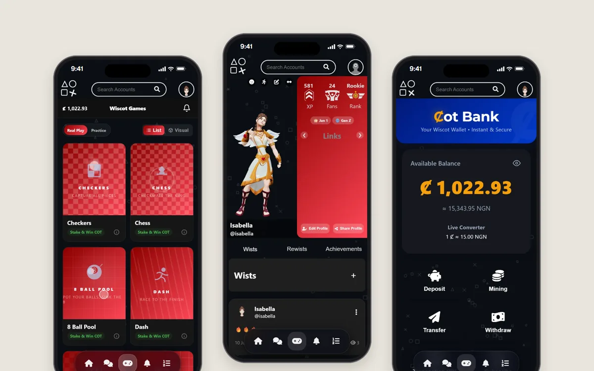
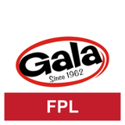
Gala FPL Challenge
A real-money fantasy football leaderboard for about 1,000 players, built for Gala.
Read the case study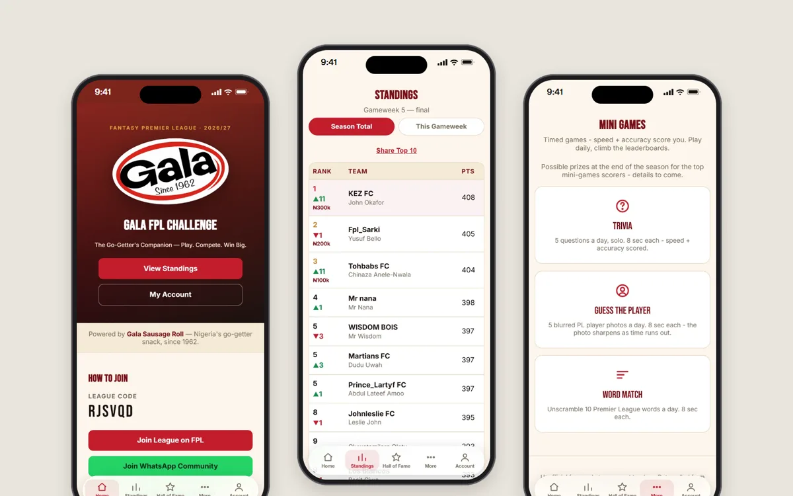
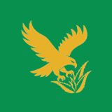
Jigsimur Eagle Team
A member portal and store for a distributor network of a Nigerian herbal drink brand.
Read the case study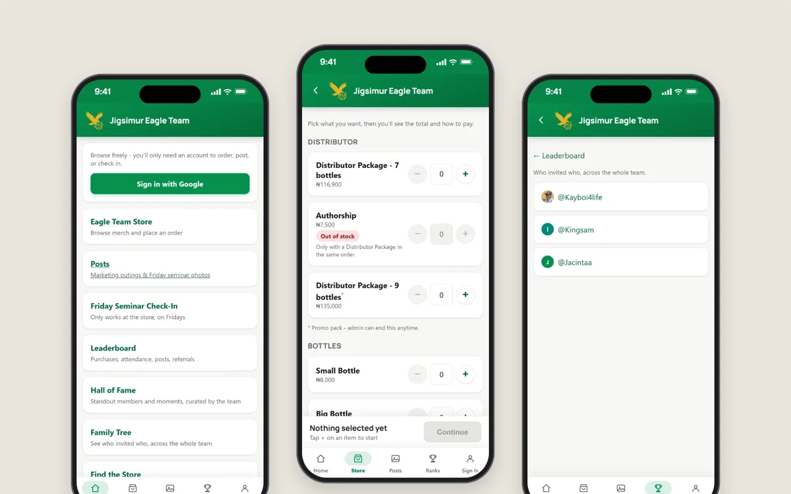
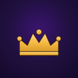
Worship The King
An installable app for my church's youth week, with four squads competing all week.
Read the case study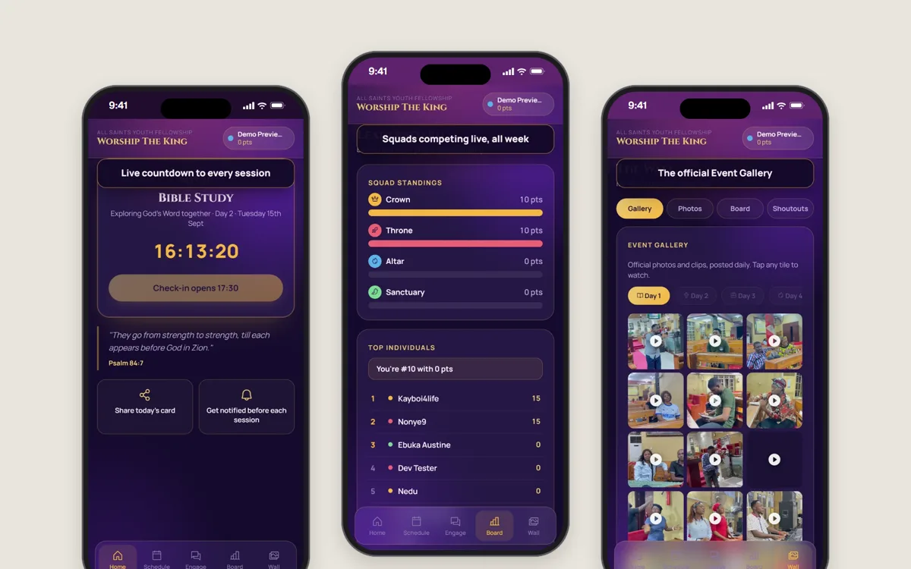
WappyTales
An AI film studio that turns written scripts into Nollywood-style drama series. 59 episodes so far.
Read the case study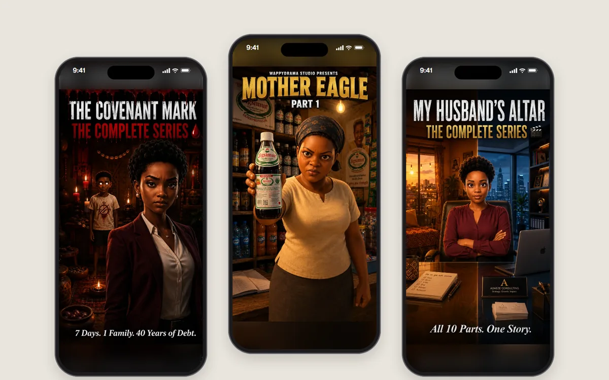
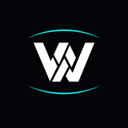
Woverico
Automated short-form news and story videos, voiced and exported daily for TikTok and Reels.
Read the case study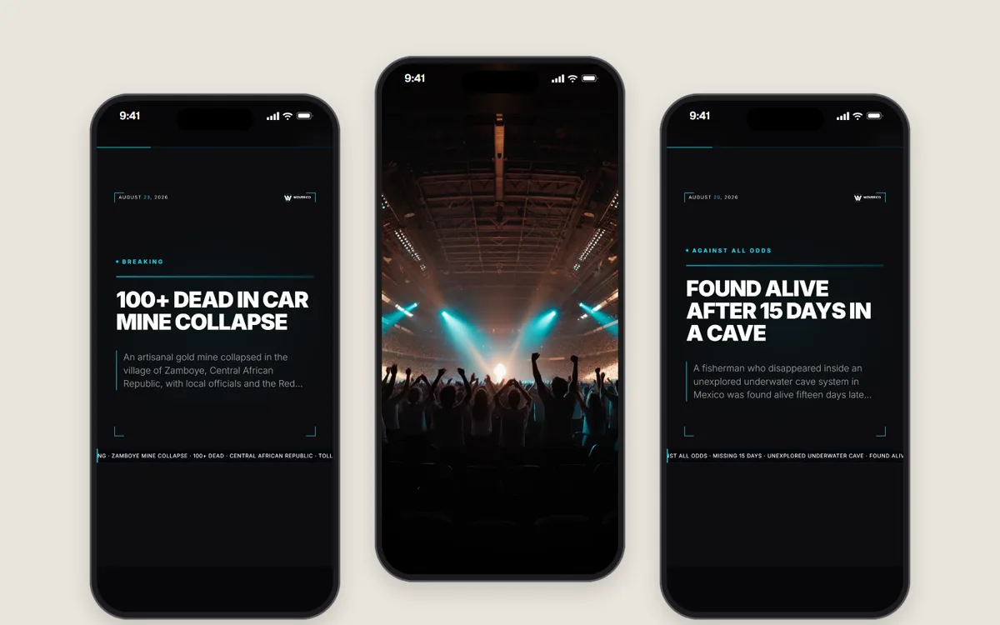
StudyPath
A Duolingo-style study app for university courses. The MVP was tested at Babcock; the full product is in development for web, Android and iOS.
Read the case study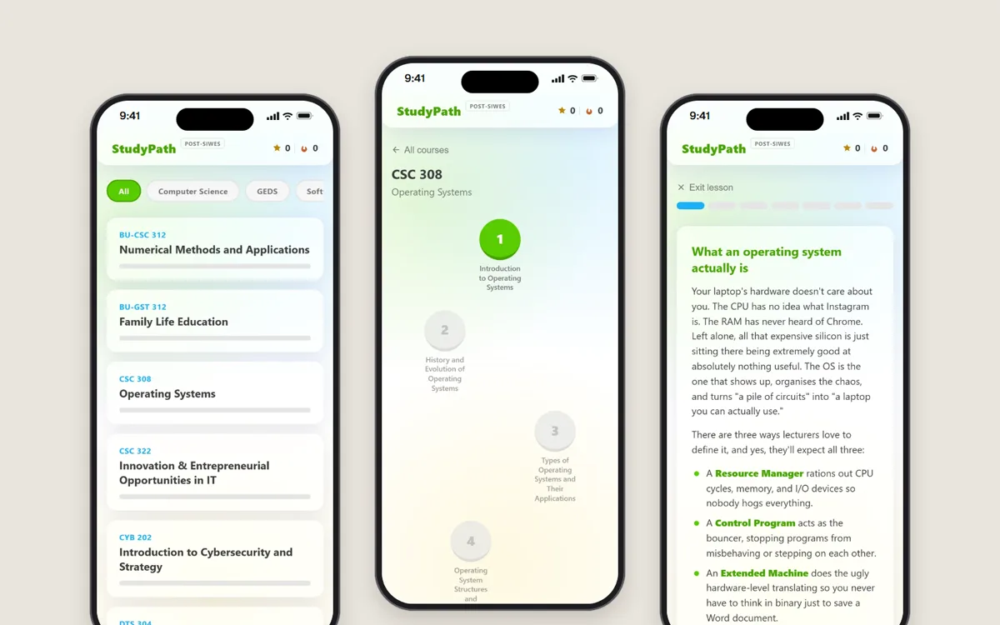
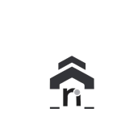
RentNest
A rental app for Nigeria: map search, landlord chat, inspections, applications and leases.
Read the case study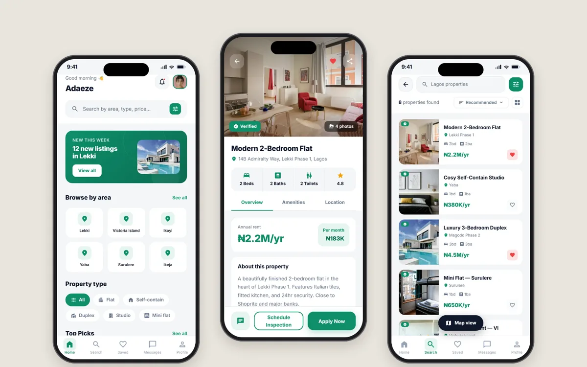
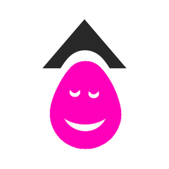
Smart Bin
A bin that opens itself when someone walks up to it. 2nd place at EduPoint RoboCode Fest 1.0, with Radiance High School.
Read the case study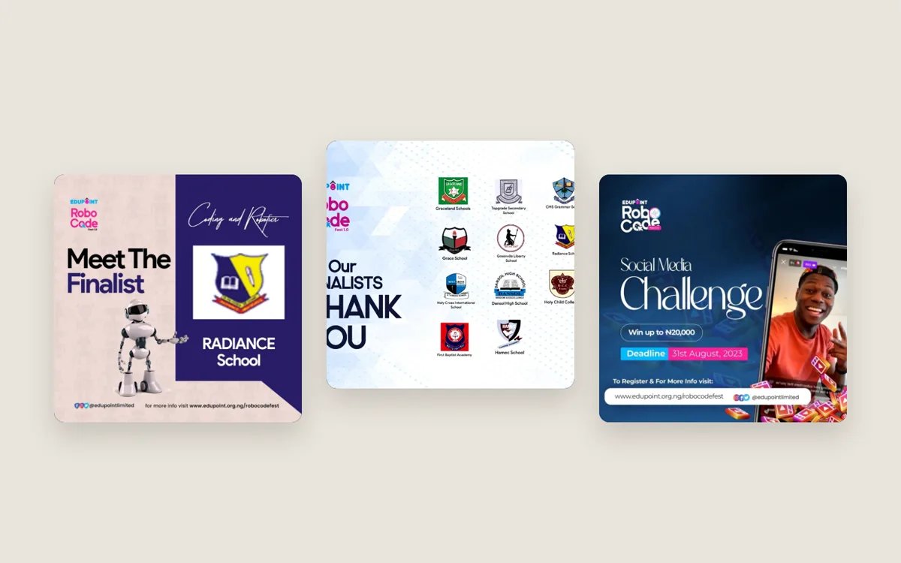
Also made
Practice projects and tools. Real and working, just not big enough for their own page.
- TBTA short-form video series pipeline: Piper voices, word-by-word captions from faster-whisper and generated thumbnails.
- Fantasy sports appsBerneese FPL League, Boom Shakalaka FPL and Fantasy Warriors: practice builds of the leaderboard idea behind the Gala project.
- WistA card builder for making rich, shareable cards.
- W-MoviesA movie browsing app on the TMDB API, built during my SIWES.